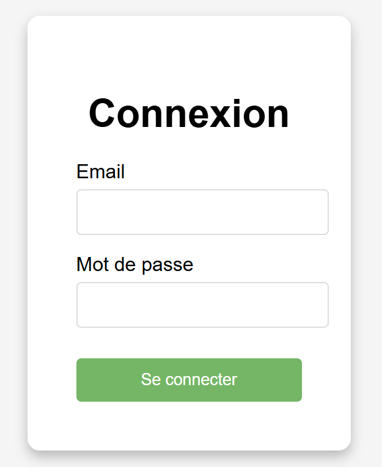

Projet Intranet
Le projet consiste à concevoir et développer un intranet pour l’entreprise Lors de ma première année de BTS SIO, j’ai participé dans une équipe de 3 au développement d’un intranet d’entreprise pour Corpany. Ce projet visait à centraliser les informations et à améliorer la collaboration interne de l’entreprise grâce à une plateforme numérique complète reposant sur une base de données MariaDB.
Technologies
- PHP/HTML/CSS/SQL
Compétences
▸Recenser et identifier les ressources numériques ▸Traiter des demandes concernant les applications
Pour cela, nous avons créé un fichier README dans lequel nous détaillons toutes les ressources utiles pour le bon fonctionnement du projet. Le tout est écrit en anglais. Vous pouvez le consulter ici : https://gitlab.com/KKG_FatOoSs/projet-php. De plus, pour le traitement des demandes, nous avons mis en place un système de tickets dans notre Git, ce qui permet à chacun de savoir où il en est dans ses tâches.
